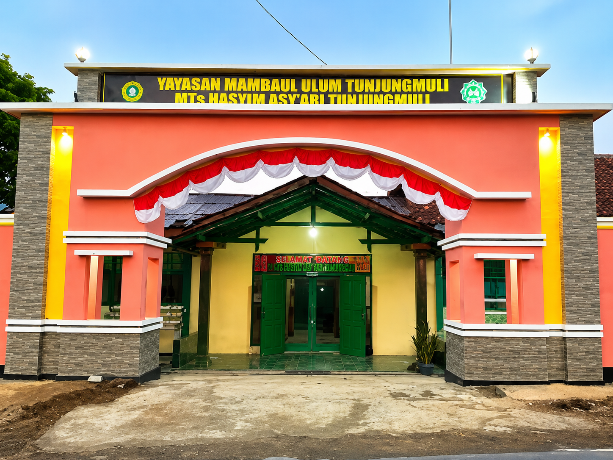
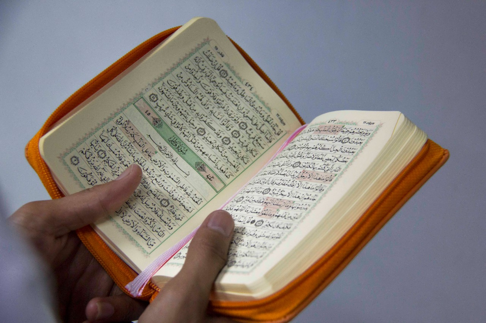
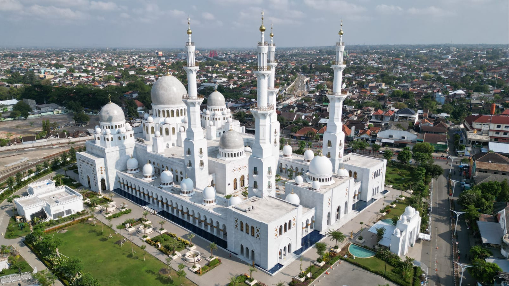

Membentuk Generasi Berakhlak Mulia & Unggul Akademik
Selamat datang di website resmi MTs Hasyim Asy'ari Tunjungmuli, Karangmoncol, Purbalingga. Madrasah modern bernuansa religi dalam mengukir masa depan cemerlang.

GERBANG MADRASAH
MTs Hasyim Asy'ari Tunjungmuli
250+
Siswa Aktif
29
Guru & Staf
12
Ruang Kelas

Ahmad Najib, S.Pd.I.
Kepala MTs Hasyim Asy'ari
Mendidik dengan Hati, Membekali dengan Teknologi, Berpondasikan Aswaja
Assalamu'alaikum Warahmatullahi Wabarakatuh,
Segala puji bagi Allah SWT, Tuhan semesta alam, yang telah menganugerahkan taufik dan hidayah-Nya kepada kita semua. Di era disrupsi digital yang bergerak begitu dinamis, MTs Hasyim Asy'ari Tunjungmuli berkomitmen tinggi untuk menghadirkan iklim pendidikan yang relevan, seimbang, dan kokoh lahir batin.
Kami menyadari bahwa kecerdasan intelektual saja tidaklah cukup. Oleh karena itu, kurikulum madrasah kami integrasikan penuh dengan adab Islami khas ulama Nusantara Ahlussunnah wal Jama'ah.
BERITA & INFORMASI
Kabar Terbaru Madrasah

Juara 2 Pencak Silat Putra & Putri Piala Bupati Purbalingga 2019
MTs Hasyim Asy'ari berhasil menorehkan prestasi yang membanggakan dalam ajang Piala Bupati Purbalingga. Dalam kompetisi ini...
Juara 3 MTQ Putra Tingkat Kecamatan Tahun 2018
MTs Hasyim Asy'ari berhasil meraih prestasi yang membanggakan dalam ajang Musabaqah Tilawatil Qur'an (MTQ) tingkat kecamatan...

Juara 2 Tartil Putra Tingkat Kecamatan Tahun 2018
MTs Hasyim Asy'ari kembali menunjukkan prestasinya dalam bidang keagamaan dengan meraih penghargaan pada lomba tartil...
Mulai Masa Depan Hebat Bersama MTs Hasyim Asy'ari
Bimbingan akhlak unggul, pembiasaan religius Aswaja, dan lingkungan asri di Tunjungmuli siap melahirkan siswa yang cerdas, kreatif, dan berbakti. Daftar PPDB 2026/2027 sekarang juga!
Profil Madrasah
Kenali lebih dekat MTs Hasyim Asy'ari Tunjungmuli: dari visi luhur kepesantrenan hingga langkah kemajuan masa kini.
PILAR PANDUAN
Visi Madrasah
"Berakhlakul Karimah, Berkualitas, dan Berbudaya"
Ditetapkan bersama Ketua Yayasan & Dewan Guru
MEWUJUDKAN VISI
Misi Madrasah
-
1
Melaksanakan Pembelajaran dan Bimbingan Secara Efektif.
-
2
Menanamkan dan Menumbuhkembangkan Semangat Berkompetisi.
-
3
Senantiasa Mendorong Semangat Siswa untuk Menggali Potensi Diri.
-
4
Menumbuhkan Kesadaran dan Penghayatan Secara Mendalam Terhadap Ajaran Agama Islam.
-
5
Senantiasa Mengikuti Laju Perkembangan dan Perubahan Kemajuan Ilmu Pengetahuan dan Teknologi.
Profil Sekolah
Madrasah Tsanawiyah Hasyim Asy'ari berada di Jalan Raya Tunjungmuli - Bobotsari Km. 01, Dusun Gondang, Desa Tunjungmuli, Kecamatan Karangmoncol, Kabupaten Purbalingga, Jawa Tengah. Didirikan pada tahun 1983 oleh para tokoh masyarakat dan tokoh agama setempat. MTs Hasyim Asy'ari Tunjungmuli berada di bawah naungan Yayasan Mamba'ul 'Ulum Tunjungmuli.
Yayasan Mamba'ul 'Ulum Tunjungmuli beralamat di Jl. K.H. Muhammad Roni, Tobong Pesantren, Desa Tunjungmuli, kecamatan Karangmoncol, kabupaten Purbalingga, Jawa Tengah. Selain mengelola Pondok Pesantren Yayasan Mamba'ul 'Ulum Tunjungmuli juga mengelola beberapa lembaga pendidikan formal mulai dari PAUD, RA, MI, MTs, MA bahkan SMK.
MTs Hasyim Asy'ari Tunjungmuli juga termasuk anggota Lembaga Pendidikan Ma'arif Nahdlatul 'Ulama Kabupaten Purbalingga. Dari sini jelas bahwa MTs Hasyim Asy'ari Tunjungmuli merupakan madrasah yang berhalauan Ahlussunnah Waljama'ah An-Nahdliyyah.
Guru & Staf
Bapak Ahmad Najib, S.Pd.I.
(Kepala Madrasah)

Bapak Ah. Ghufron, S.Pd.I.
(Guru Bahasa Arab)

Bapak Mukholis, S.Ag.
(Guru Al-Qur'an Hadits)

Ibu Nety Hidayati, S.Ag., M.Pd.I.
(Guru Fikih dan Pembina Pramuka)

Bapak Foto Fauzan Fahmi, A.Md.
(Guru Bahasa Inggris)

Bapak Ahmad Saiful Mujib, S.Pd.
(Guru Ilmu Pengetahuan Alam)

Bapak Saefudin, S.Pd.I.
(Guru Ilmu Pengetahuan Sosial / Operator Madrasah)

Ibu Siti Munfaridah, S.Pd.I.
(Guru Ilmu Pengetahuan Sosial / Pembina PMR)

Ibu Ika Hariyanti, S.Sos.
(Guru Pendidikan Pancasila dan Kewarganegaraan)

Bapak Hufron Riyadi, S.Pd.I.
(Guru Bahasa Inggris)

Bapak Sabar Waryanto, S.Pd.
(Guru Bahasa Indonesia / Waka Kesiswaan)

Bapak Dul Ghofur, S.Pd.I.
(Guru Sejarah Kebudayaan Islam / Waka Sarana Prasarana)

Bapak Abdul Kohar, S.Pd.
(Guru Matematika)

Bapak Ade Trihastowo, S.Pd.
(Guru Pendidikan Jasmani, Olahraga dan Kesehatan)

Bapak Ahmad Mujarir
(Guru Ke-NU-an dan Kitab Kuning)

Bapak Basuki
(Guru Matematika dan Pembina Kesenian)

Bapak M. Lutfi, B.A.
(Guru Bahasa Jawa)

Bapak Miswanto, S.Pd.
(Guru Ilmu Pengetahuan Alam dan Pembina OSIS)

Bapak Khafid, S.Pd.I.
(Guru Akidah Akhlak, Ke-NU-an / Waka Kurikulum)

Ibu Sri Nurhayati, S.Pd.
(Guru Bahasa Indonesia)

Ibu Supriyanti, S.Pd.I.
(Guru Seni Budaya dan Prakarya)

Ibu Yunia Nur Istiqomah, S.Pd.
(Guru Akidah Akhlak dan Seni Budaya)
Program Akademik
Mendidik dengan mengintegrasikan kurikulum nasional, penguasaan sains digital, serta fondasi keilmuan khas pesantren.
Kurikulum & Kepesantrenan Aswaja
Kurikulum MTs Hasyim Asy'ari Tunjungmuli memadukan kurikulum standar dari Kementerian Agama dan Kementerian Pendidikan, dengan penguatan materi keagamaan khas pesantren salaf. Pendekatan ini dirancang untuk mencetak lulusan yang tidak hanya cerdas secara akademik, namun juga memiliki kedalaman spiritual dan akhlak mulia berlandaskan ajaran Ahlussunnah wal Jama'ah.
Mata Pelajaran
Keagamaan
- Al-Qur'an Hadits
- Akidah Akhlak
- Fikih
- Sejarah Kebudayaan Islam
- Bahasa Arab
- Ke-NU-an
- Kitab Kuning
Umum
- Pendidikan Pancasila & Kewarganegaraan
- Bahasa Indonesia
- Matematika
- Ilmu Pengetahuan Alam (IPA)
- Ilmu Pengetahuan Sosial (IPS)
- Bahasa Inggris
Seni, Keterampilan & Kreativitas
- Seni Budaya & Keterampilan
- Prakarya
Olahraga & Kesehatan
- Pendidikan Jasmani, Olahraga dan Kesehatan (PJOK)
Eksplorasi Fasilitas

Mushola
Pusat kegiatan spiritual siswa, digunakan untuk shalat berjamaah, tadarus Al-Qur'an, dan kajian kitab kuning rutin. Lingkungan yang nyaman untuk mendukung ibadah dengan khusyuk.
Wadah Minat & Bakat (Ekstrakurikuler)
Tahfidzul Qur'an
Menghafal Al-Qur'an dengan setoran rutin makhraj tajwid yang dibimbing langsung hafizh bersertifikat.
Pencak Silat Pagar Nusa
Melatih bela diri, kedisiplinan fisik dan mental khas pencak silat Nahdlatul Ulama yang penuh prestasi.
Rebana / Hadroh
Menyalurkan bakat seni musik Islami, melantunkan sholawat nabi dengan instrumen rebana yang dinamis.
OSIS
Organisasi siswa untuk melatih jiwa kepemimpinan, manajemen acara, dan public speaking sejak dini.
Drumband
Melatih kekompakan tim, musikalitas, dan performa baris-berbaris untuk tampil di berbagai perayaan.
Pramuka
Membangun kemandirian, gotong royong, kecintaan alam, dan karakter Praja Muda Karana.
Hub Berita & Informasi
Dapatkan berita terkini, artikel edukatif, kemajuan riset, serta pengumuman penting MTs Hasyim Asy'ari Tunjungmuli.
Juara 2 Pencak Silat Putra & Putri Piala Bupati Purbalingga Tahun 2019
MTs Hasyim Asy'ari berhasil menorehkan prestasi yang membanggakan dalam ajang Piala Bupati Purbalingga. Dalam kompetisi ini, para siswa...
Juara 3 MTQ Putra Tingkat Kecamatan Tahun 2018
MTs Hasyim Asy'ari berhasil meraih prestasi yang membanggakan dalam ajang Musabaqah Tilawatil Qur'an (MTQ) tingkat kecamatan...
Juara 2 Tartil Putra Tingkat Kecamatan Tahun 2018
MTs Hasyim Asy'ari kembali menunjukkan prestasinya dalam bidang keagamaan dengan meraih penghargaan pada lomba tartil antar sekolah...
Pelaksanaan Ujian Akhir Madrasah Berjalan Lancar
Siswa kelas IX MTs Hasyim Asy'ari telah menyelesaikan seluruh rangkaian ujian akhir madrasah dengan tertib dan mematuhi protokol kesehatan yang ketat.

Peringatan Hari Santri Nasional dengan Apel Akbar
Seluruh elemen madrasah beserta yayasan menggelar apel akbar menggunakan sarung dan peci sebagai bentuk penghormatan perjuangan ulama.

Sosialisasi Kurikulum Merdeka Terintegrasi
Para dewan guru mengikuti workshop intensif untuk memantapkan penerapan Kurikulum Merdeka yang disesuaikan dengan nilai keislaman pesantren.
Hub Berita & Informasi
Dapatkan berita terkini, artikel edukatif, kemajuan riset, serta pengumuman penting.
Rekomendasi Terkait
Pelaksanaan Ujian Akhir Madrasah Berjalan Lancar
31 Mei 2026

Peringatan Hari Santri Nasional dengan Apel Akbar
31 Mei 2026
Juara 3 MTQ Putra Tingkat Kecamatan 2018
18 Mei 2018
Galeri Dokumentasi
Merekam rekam jejak keceriaan kegiatan belajar, lingkungan asri, serta goresan prestasi di lingkungan MTs Hasyim Asy'ari Tunjungmuli.

Lingkungan Asri
Pemandangan sejuk di sekitar area madrasah.
Juara Lomba Pencak Silat
Atlet silat Pagar Nusa menunjukkan piala kemenangan.
Istighosah Bersama
Kegiatan doa bersama menjelang ujian nasional.

Kegiatan di Mushola
Siswa melangsungkan shalat Dhuha berjamaah rutin.
Kerja Bakti Jumat Bersih
Menjaga kebersihan dan kekompakan siswa.
Rutinan Tadarus Al-Qur'an
Pembiasaan membaca Al-Qur'an sebelum jam pelajaran.
Pendaftaran PPDB
Tahun Ajaran 2026/2027. Proses mandiri terkomputerisasi, cepat, transparan, dan dapat dipantau dari rumah.
Assalamu'alaikum Wr. Wb.
Dengan semakin dekatnya tahun pelajaran baru, Madrasah Tsanawiyah Hasyim Asy'ari Tunjungmuli membuka pendaftaran peserta didik baru untuk tahun pelajaran 2026/2027. Pendaftaran Peserta Didik Baru tahap pertama dilaksanakan tanggal 22 April - 31 Mei 2026. Pendaftaran tahap kedua dilaksanakan tanggal 03 Juni s/d 12 Juli 2026.
- Peserta didik mengikuti Ujian Sekolah / Ujian Madrasah pada waktu yang telah ditentukan dan nantinya dinyatakan lulus dari SD/MI.
- Khusus untuk calon peserta didik yang pindah masuk, maka harus menyertakan Surat Pindah dan Raport dari Sekolah / Madrasah sebelumnya.
- Mengisi formulir online atau offline (pilih salah satu) dan melengkapi lampiran formulir yang diperlukan.
- Berkelakuan baik dan bersedia mengikuti Peraturan dan Tata Tertib di MTs Hasyim Asy'ari Tunjungmuli.
Penerimaan Peserta Didik Baru (PPDB) secara offline, maka formulir pendaftaran dapat diambil langsung di sekretariat PPDB MTs Hasyim Asy'ari Tunjungmuli pada hari dan jam kerja, atau bisa juga diambil di rumah Guru dan Karyawan MTs Hasyim Asy'ari Tunjungmuli terdekat.
Formulir offline yang sudah diisi diserahkan langsung ke Sekretariat PPDB MTs Hasyim Asy'ari Tunjungmuli pada hari dan jam kerja dengan dilampiri :
- Fotokopi Kartu Keluarga (KK)
- Fotokopi Akta Kelahiran
- Fotokopi KTP Ayah dan Ibu
- Foto Calon Peserta Didik 3 × 4 (Jika Ada)
- Fotokopi KKS/KPS/KIP (Jika Ada)
- Surat Hasil Ujian Sementara (Jika Sudah Ada)
Pendaftaran bisa dilakukan secara online melalui formulir di bawah ini :
Formulir Penerimaan Peserta Didik Baru (PPDB) Online.Lampiran formulir (Fotokopi KK, Akta Kelahiran, KTP Ayah-Ibu, SKHU SD/MI, dan Ijazah SD/MI) bisa dikirimkan langsung ke sekretariat PPDB MTs Hasyim Asy'ari Tunjungmuli saat sudah mulai proses pembelajaran. Lampiran formulir juga bisa dikirimkan melalui Whatsapp ke panitia PPDB dalam bentuk file foto yang jelas dan terbaca.
Daftar Calon Siswa Terdaftar Sementara
Daftar Calon Peserta Didik Baru yang sudah mendaftar secara online.(Beberapa informasi sengaja disembunyikan, hanya nama dan tempat tanggal lahir yang ditampilkan).
Kontak Panitia
Untuk informasi lebih lanjut anda bisa menghubungi Panitia PPDB MTs Hasyim Asy'ari Tunjungmuli tahun pelajaran 2023/2024 :
- 1. Fauzan Fahmi (085329841033)
- 2. Sri Nurhayati (088232529652)
- 3. Lulu Krisniasiwi P. (081384588868)
- 4. Yunia Nur Istiqomah (085722734106)
Hubungi & Layanan Pengaduan
Kami siap melayani kebutuhan informasi pendaftaran, pengaduan wali murid, serta kemitraan sinergis lembaga.
LOKASI SEKOLAH
Jl. Raya Tunjungmuli, Kec. Karangmoncol, Kabupaten Purbalingga, Jawa Tengah 53355
SALURAN TELEPHON / WA
+ 62 811 261 9026
SURAT ELEKTRONIK (EMAIL)
mtsha83@gmail.com
& mts.hasyimasyari@yahoo.co.id
JAM LAYANAN KANTOR
Senin - Sabtu: Pukul 07.30 - 13.00 WIB
GEOLOKASI TERVERIFIKASI MAP